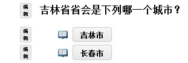

使用课程展示工具
您可以使用以上功能按钮添加内容到本页面。其中最常用的功能是：
- 添加文本 - 通过文本编辑器输入文字内容
- 添加资源 - 上传文档或添加网址
- 添加多媒体 - 添加一个可以在页面内直接显示的文件，例如Flash动画或视频文件
我们建议您首先尝试添加文本。 您也可以 添加 相关资源、作业、测验、讨论区话题等内容的链接。选择 添加多媒体 加入Flash动画、电影、视频网站的链接等等。
将鼠标放在相应的按钮上可以看到该按钮的功能简介。
在您添加过的内容左侧有一个编辑按钮。您可以修改多媒体内容的大小、标题、简介等等。 您也可以通过编辑按钮发布一系列活动和信息。
页面内其它您可以加入的信息
- 添加网站 - 上传带有 web 内容的压缩文件
- 添加子页 - 创建一个链接到当前页面的子页面，用于增加更多信息
- 添加作业 - 从已有的作业中选择一个添加到本页面
- 添加测验 - 从已有的测验中选择一个添加到本页面
- 添加论坛主题 - 选择一个已经存在的链接主题，将其链接添加到本页面
- 使用外部工具 - 使用 IMS BLTI 等添加工具。
- 使用评论工具 - 允许学生添加评论
- 添加学生内容 - 添加章节，学生可以在其中创建自己的页面。
顶部的“配置”按钮可以设定本页面的属性。 每一个所添加内容左边的“编辑”按钮可以添加该内容的其它属性。
更多信息
基本功能
有很多情况需要使用“课程展示”功能
- 按章节或内容组织材料 - 如果您需要在网站的左侧导航栏添加内容，请到 站点信息 的 编辑工具 勾选“课程展示”工具。在创建过程中您需要对新模块添加一个标题，以后您可以使用“编辑标题”按钮进行修改。
- 按话题组织材料 - 具体见右侧的示例2. 我们创建了包含主要内容和三个子话题的页面，在主页上有到这三个子页面的链接。要创建这样的页面，请使用页面上方的 添加子页 按钮。
请注意： 在 添加子页 对话框中 单击“创建”后，您会跳转到您刚刚添加的子页面以方便您添加内容，此时您可以使用页面上部的“返回”按钮回到当前页面。
高级功能
以上两种方法可以满足您的大部分需求，不过使用“课程展示”工具您可以创建一些结构更为复杂的页面。如下是进阶技巧：
- 创建系列页面 有时候您希望学生按照一定的顺序浏览页面。在基本功能中我们介绍了如何在主页面创建很多像示例 2.那样的子页面，这样能很方便的让学生查阅所有材料。不过如果您希望学生能够按照一定的顺序阅读这些资料的话，您可以勾选 下一页 ， 这样页面下方会出现一个“下一页”按钮，可以跳转到您创建的子页面，然后再在子页面里创建新的子页面并勾选“下一页”，如法炮制。反复多次后，您就创建了一系列可以使用“下一页”按钮按顺序进行跳转的系列网页。下面是更详细的介绍：
要使用 下一页功能，首先 添加子页 ，同时勾选 "下一页"。 建议您同时勾选 "显示为按钮而不链接"选项。
说明：勾选 "下一页" 后，在您创建的页面单击下一页则会跳转到您创建的子页，而不是返回当前页面，并且页面内容的上方不显示可以返回先前页面的导航栏。（不过对于学生来说，他们可以通过地址索引等方式访问任何页面， 除非您限制了他们的访问权限。）
勾选 "显示为按钮而不是链接" 使您创建的子页面在本页显示为按钮而不是链接
- 根据学生的选择跳转到不同的页面 在右侧可以看到示例 3. 根据学生不同的回答跳转大不同的页面。要实现这一点，首先 添加文本 ， 然后通过在它的下方 添加子页 加入两个子页面，跳转到不同的页面。
添加子页面 的选项您可以自由设定。 在示例 3.中我们勾选了“显示为按钮而不是链接”。

示例 1. 关于 添加文本 , 添加测验 , 添加作业 和 添加论坛主题 的示例。 示例中的图片是在 添加文本 功能的编辑器中添加的，使用文本编辑器工具栏中的“模板”功能可以实现如图所示的图文混排效果。

示例 2. 关于添加不同章节的示例: 使用添加文本添加内容综述，再使用三次添加子页工具为每个章节添加子页。单击每个子页即可查阅具体内容。（创建子页时不需要勾选“显示为按钮”）

示例 3. 根据不同的答案跳转到不同的页面。 两个答案的添加使用了 添加子页 工具。 在添加子页选中下面的两个选项: "下一页" 和 "显示为按钮而不是链接"。 您可以通过添加子页按钮添加一个新的子页或者链接到已经存在的子页。